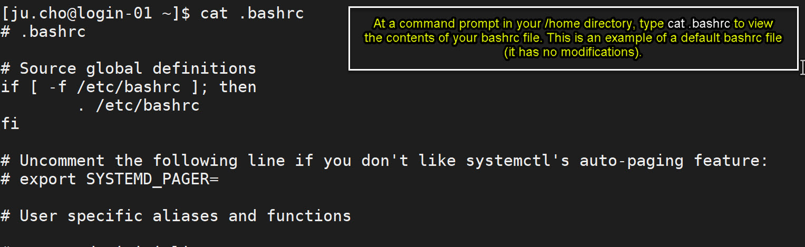
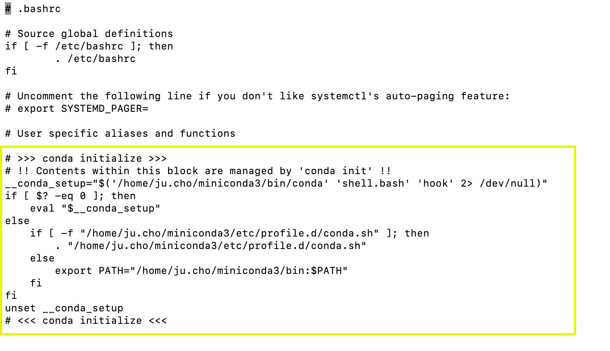
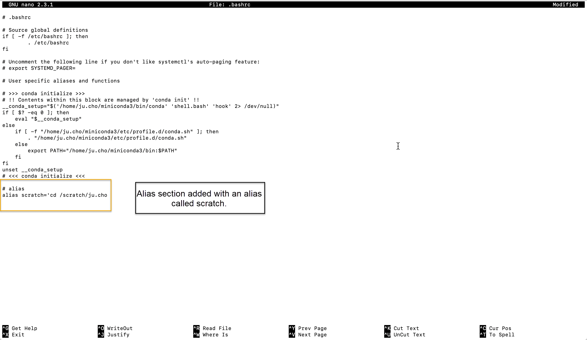

Working with your bashrc file¶
A bashrc file is a shell script file that Linux uses when starting up to load items like modules and aliases into your profile. Your bashrc file lives in your /home directory. You can make changes to it with a text editor like nano. Adding sections to your bashrc file, such as adding modules to load when you sign in or assigning aliases for commands that you use frequently, can be time savers for your workflows.
Caution
Making edits to your bashrc file can result in issues, such as not able to launch an app or not able to execute commands. Before making changes to your bashrc file, make a backup of the default bashrc file so you can restore it if necessary. If you need help with editing your bashrc file, reach out to rchelp@northeastern.edu or schedule a consultation with a staff member who can help suggest edits and troubleshoot any issues you might be having.
About your bashrc file¶
You have a default bashrc file in your home directory when your account is created. See the figure below for an example of a default bashrc file.
In addition to editing your bashrc file as outlined in the example above, programs that you install can also modify your bashrc file. For example, if you follow the procedure outlined in Working with a Miniconda environment, there will be a section added to your bashrc file that automatically loads your conda environment every time you sign in to Discovery. See the figure below for an example of this:
You should not modify this section in the bashrc file directly. To remove this section you would need to uninstall Miniconda. The uninstall process will remove this section from your bashrc file automatically.
If you need help with your bashrc file or would like it restored to its default, reach out to the RC team at rchelp@northeastern.edu, and we can provide you with a new, default bashrc file and/or help troubleshoot issues with the file.
Editing your bashrc file¶
The basic workflow for editing your bashrc file is to sign in to Discovery, go to your /home directory, open the file in a text editor on the command line, make your edits, save the file, sign out of Discovery, then sign back in again. Your changes will take effect when you have signed back in again.
Example procedure for editing your bashrc file:
Sign in to Discovery.
(Optional) Type PWD to make sure you are in your /home directory.
(Optional) Type
ls -ato view the contents of your /home directory, including hidden files. Your bashrc file is a hidden file (hidden files are preceded by a.). Using the-aoption withlsdisplays hidden files.(Recommended) Type
cp .bashrc .bashrc-defaultto make a copy of your bashrc file called.bashrc-default.Type
nano .bashrcto open your bashrc file in the nano text editor.Type the edits that you want to make to your file. In this example, an alias was added to create a shortcut to the user’s /scratch space.
Save the file and exit the editor.
Sign out of Discovery and sign back in for the changes to take effect.